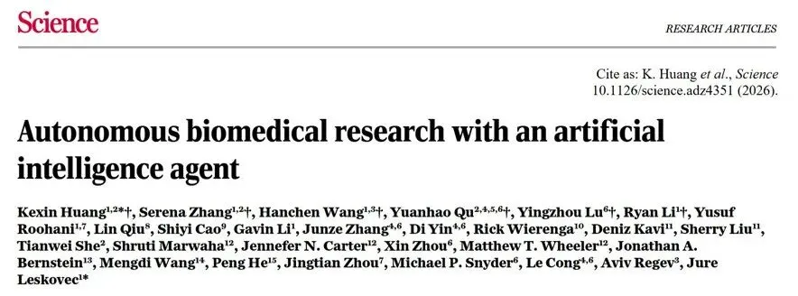
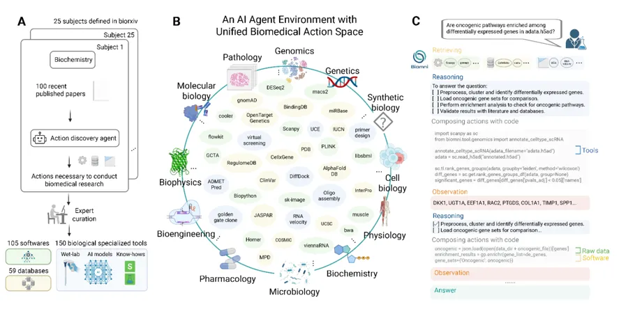
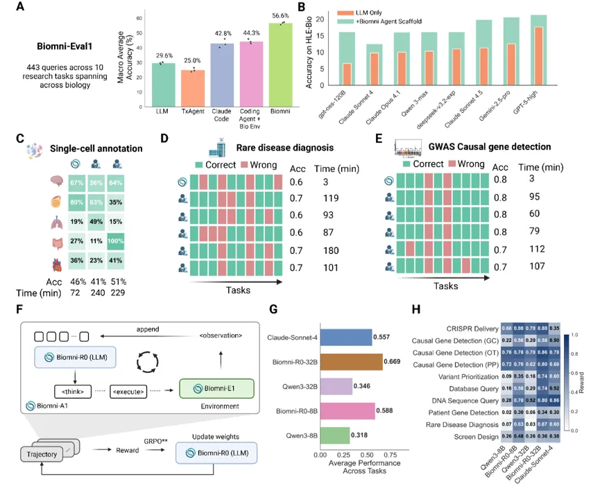
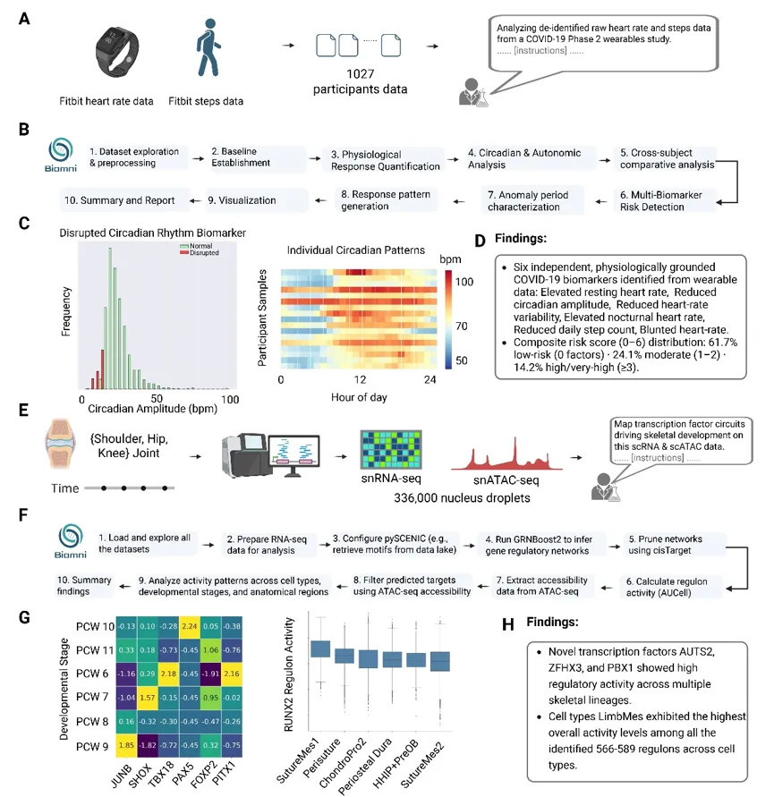
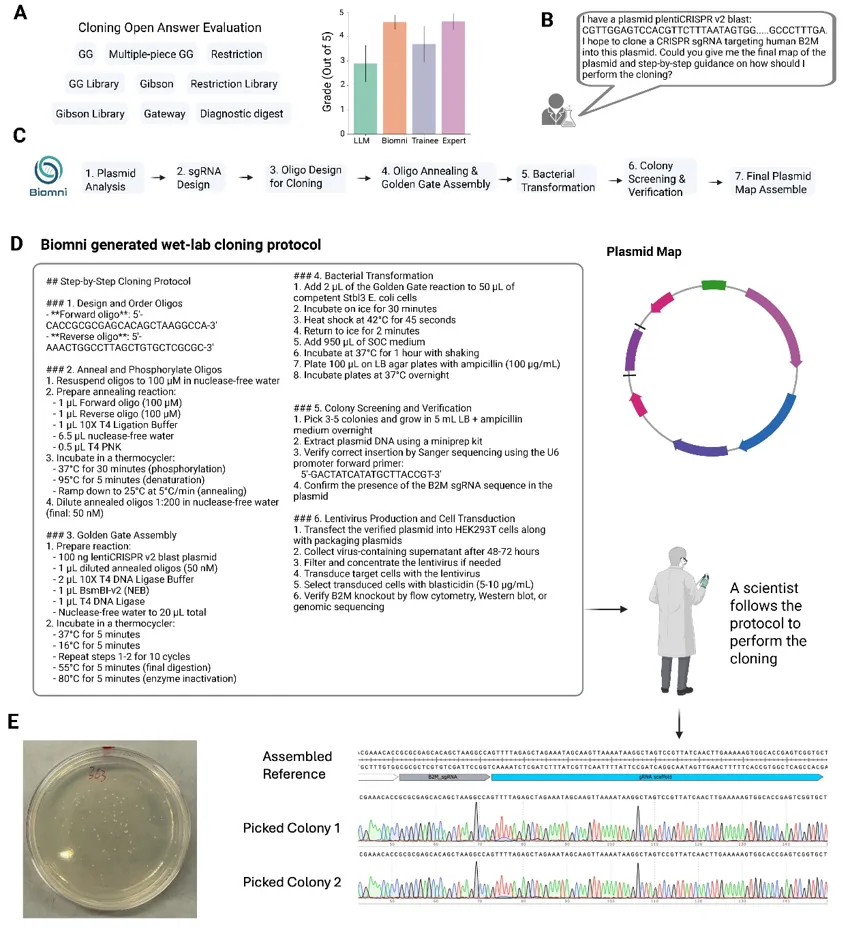
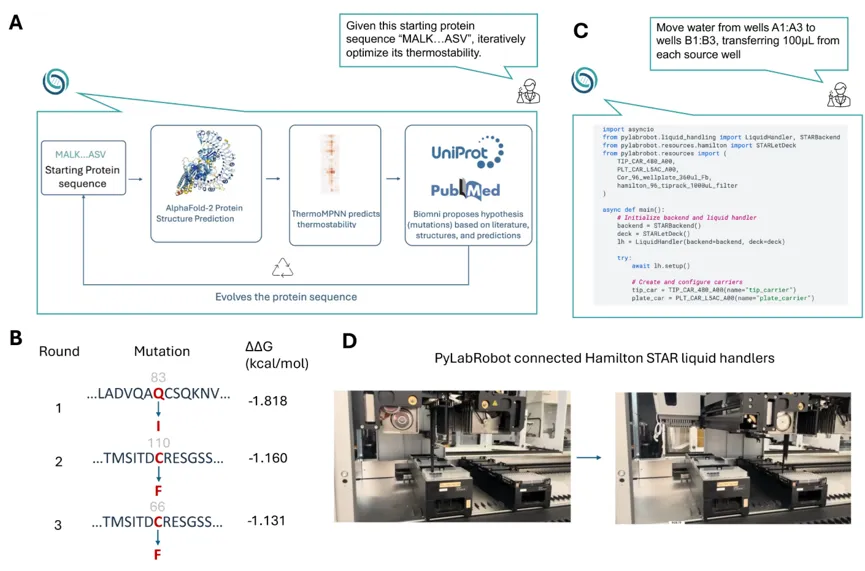

打败一众博士后和大学教授，《Science》刊登Biomni：生物医学自主研究型AI
原文：https://mp.weixin.qq.com/s?__biz=MzAwMzIzOTk5OQ==&mid=2247539551&idx=1&sn=c1a9bcfedf6b2f5b9f4aee14ae456823&chksm=9b3c220fac4bab192a30b3246683dbde09a9a0da58a2541617d12de65f07bcaa8ed025ac8537#rd 合集：文献速递
一、写在前面
Biomini已经以标题" Autonomous biomedical research with an artificial intelligence agent"发布于《 Science》（IF=45.8）** 。但其实2025年5月30日就以预印本的形式以"Biomni: A General-Purpose Biomedical AI Agent"标题发出。赶紧用起来吧，小心技术红利不保~**

生物医学研究是探索疾病机制、开发新药和疗法的关键。然而，现在的科学家正面临着“信息大爆炸”的烦恼。随着实验规模越来越大、数据越来越多、文献浩如烟海，研究进度反而变慢了。这主要是因为工作流程太复杂、太零散，科学家们很难把各种专业工具、海量文献和复杂的实验设计完美结合起来。这就导致了一个尴尬的局面：虽然手里握着大量宝贵的数据，但因为人手不足、精力有限，很多数据只能被搁置，许多跨领域的知识也无法被联系起来。这种“数据多但专家少”的矛盾，迫切需要一种新方法，来帮科学家减轻负担，把生物医学研究的潜力彻底释放出来。
近年来，人工智能在软件、医疗等领域大显身手，它们能自动干活，极大地提高了效率，这给生物医学研究带来了新希望。但是，现有的生物医学AI大多是“偏科生”，只能干一些特定的窄活儿，比如专门分析单细胞数据或专门设计某种抗体，换个领域就无能为力了。要想让AI代理成为能胜任各种任务的“全科医生”，技术上还有个大难题：AI不仅需要脑子好使（强大的推理能力），还得能真正动手干活（执行高度专业的生物医学操作）。现在的AI虽然很聪明，但面对极其复杂的生物医学环境时，往往不知道该怎么用工具。因此，我们急需一种全新的、通用的AI架构，让它能像人类专家一样，灵活地调用各种工具，自主完成各种复杂的生物医学任务。
如果需要单细胞数据分析教学、生信热点全文复现、生信个性化分析、常态化实验学习，欢迎滴滴[Biomamba_zhushou]获取帮助。
二、主要内容
1. Biomni的整体流程

Fig.1
生物医学领域的知识浩如烟海，要把它们整合起来绝非易事。为此，研究团队利用AI“阅读”了25个生物医学领域的2500篇最新论文，从中精准提取出做研究必需的任务、工具和数据库。在此基础上，他们打造了名为 Biomni-E1 的统一工作环境（Fig.1A）。这个环境就像一个“超级工具箱”，里面不仅有150个经过专家严格验证的专业工具，还预装了105个常用的生物软件（支持Python、R等语言）。对于数据库，团队也做了贴心处理：能联网的（如PDB等），就用统一接口让AI直接用自然语言提问；不能联网的，就下载到本地整理成结构化数据。最终，这个工具箱里集成了59个专业数据库，为AI干活备足了“粮草”（Fig.1B）。有了工具箱，还需要一个聪明的“大脑”来指挥。为了避免给每个任务写死代码，团队开发了通用的智能体架构 Biomni-A1，它具备三大核心能力。首先是“精准找工具”，它能根据用户的目标，从庞大的工具箱里动态挑选最合适的资源；其次是“用代码干活”，因为生物医学任务往往很复杂，AI会直接编写代码，灵活处理各种循环和条件逻辑，把软件、数据库和原始数据完美串联起来；最后是“边做边思考”，AI会先制定一个初步计划，然后在执行过程中根据实际情况不断调整和优化。这三大能力让 Biomni-A1 能够举一反三，轻松应对以前从未见过的复杂生物医学任务（Fig.1C）。
2. Biomni在生物医学研究基准测试中的卓越表现

Fig.2
为了测试 Biomni 面对各种生物医学问题时到底行不行，研究团队首先让它参加了一系列“标准化考试”。在名为 Biomni-Eval1 的测试中，涵盖了从 CRISPR 基因编辑、罕见病诊断到基因检测等 10 项常见的生物医学任务。结果显示，Biomni 的平均准确率达到了 57%，不仅轻松击败了基础大语言模型（30%）和专门的编程 AI（43%），甚至超越了专门针对药物研发的 AI（25%）以及配备了同款工具箱的普通 AI（44%）。此外，在测试前沿生物医学推理能力的“人类终极考试（HLE-Bio）”中，Biomni 也表现出了极强的适应性，准确率比单纯的 AI 模型高出了 6 到 12 个百分点。这充分证明，Biomni 变强不是因为换了更聪明的“底层大脑”，而是因为它拥有这套优秀的智能体架构和专属的工作环境（Fig.2A-B）。
除此之外，研究团队特意招募了拥有至少 5 年经验的资深人类专家（包括博士后和大学教授），让 Biomni 和他们进行了一场“人机对决”。在单细胞 RNA 测序分析任务中，Biomni 的准确率（45.8%）与人类专家（40.5%-50.9%）旗鼓相当，但耗时从约 230 分钟大幅缩短至 75 分钟；在罕见病诊断上，Biomni 的准确率（60%）完美匹配了专家水平，而耗时仅需 3 分钟左右，专家则需要 110 多分钟；在全基因组关联分析（GWAS）致病基因检测中，Biomni 更是达到了 80% 的准确率，耗时从 90 分钟骤降至 4 分钟。总而言之，Biomni 不仅能达到人类专家的精准度，还能成倍地缩短工作时间，极大地提升了研究效率（Fig.2C-E）。
3. Biomni 进行自主分析的案例分享

Fig.3
为了看看 Biomni 在实际科研中到底好不好用，研究团队邀请科学家们用它来解决自己手头的真实问题。在展示的 5 个典型案例中，第一个就是分析可穿戴设备数据。研究团队使用了一个包含 1027 名参与者的 Fitbit（智能手表）数据集。这些数据非常庞大且复杂，记录了长达数月的分钟级心率和步数，总共有超过 14 亿条心率记录和 3700 万条步数记录。面对这些未经处理的“原始数据”，Biomni 完全自主地从头到尾完成了一整套分析流程。它不仅成功提取出了 6 个与新冠感染相关的生理标志物（比如静息心率升高、昼夜节律减弱、夜间心率偏高、日常步数减少等），还重构了人群的 24 小时生物钟节律，并生成了一个 0 到 6 分的综合风险评分，最后还自动画出了达到出版级质量的数据图表（Fig.3A）。除了分析智能手表的数据，Biomni 在极其复杂的单细胞多组学分析（比如同时分析 snRNA-seq 和 snATAC-seq 数据）中同样表现惊艳。面对动辄几十万、上百万个细胞核的庞大且杂乱的数据集，Biomni 能够自主规划并执行一套包含十几步的复杂分析流程。它不仅能自动完成数据清洗、细胞聚类，还能精准推断出基因调控网络，并生成 UMAP、热图等专业的可视化图表。整个过程无需人工干预，它就能像经验丰富的生信专家一样，从海量数据中挖掘出具有生物学意义的假设和规律（Fig.3B）。
Biomni 不仅能在电脑前敲代码，还能指导现实中的“湿实验室”操作。在一项分子克隆任务中，研究人员让 Biomni 设计一个将特定基因片段（sgRNA）插入病毒载体的完整实验方案。Biomni 自动完成了质粒图谱分析、引物设计、组装条件设定以及后续的菌落筛选策略（Fig.3C）。在临床医学和药物研发方面，Biomni 也展现出了强大的推理能力。面对患有罕见病但病因不明的患者，Biomni 能够结合患者的临床表型和全基因组测序数据，快速进行基因优先级排序，准确锁定致病基因，其诊断准确率与人类专家持平，但耗时从几个小时骤降至几分钟（Fig.3D）。
为了测试 Biomni 能否应对极其复杂的多组学分析，研究团队给它出了一道难题：分析人类胚胎骨骼发育的庞大单细胞多组学数据（包含超过 33 万个细胞核的 snRNA-seq 和 snATAC-seq 数据，以及空间转录组数据）。面对挑战，Biomni 仅凭一段详细的自然语言指令，就自主规划并完美执行了一套包含十个阶段的分析流程。它依次完成了数据加载、RNA 数据预处理、使用 pySCENIC 提取基序、运行 GRNBoost2 推断基因调控网络、利用 cisTarget 修剪网络、用 AUCell 计算调控子活性，并结合 ATAC-seq 数据进行过滤和交叉验证，最终分析了不同细胞类型和发育阶段的活性模式。整个分析过程耗时约 5 个小时。在此期间，Biomni 展现出了极强的“自我纠错”能力——当遇到变量名不匹配等突发代码问题时，它能自动通过降采样和本地调试来解决问题。更难得的是，它全程保留了所有的代码、图表和运行日志，整理成了一份结构清晰、完全可复现的 Notebook，并在最后自动生成了一份包含关键发现的总结报告。这证明了 Biomni 完全具备独立处理前沿、复杂生物医学数据的“实战”能力（Fig.3E-H）。
4. Biomni 设计了经湿实验验证的克隆实验方案

Fig.4
为了测试 Biomni 能否指导现实中的“湿实验室”操作，研究团队选择了一项分子生物学的核心任务——基因克隆。普通的 AI 往往因为缺乏专业知识和工具，很难胜任这种需要复杂推理的工作，但 Biomni 却能完美胜任。
研究团队首先设计了一场严苛的“人机盲测”。他们准备了 10 个真实的克隆任务，让普通大模型、Biomni、一名生物学研究生以及一名拥有 5 年以上经验的斯坦福博士后同时设计实验方案。经过独立专家的盲审，Biomni 设计的方案在准确性和完整性上与资深博士后不相上下，不仅能提供同样丰富的细节，还能提前预判各种边缘问题。相比之下，研究生的方案往往不够完善，而 Biomni 却在极短的时间内自主完成了所有任务（Fig.4）。
5. Biomni 通过人工智能模型实现分子的迭代优化设计

Fig.5
为了让普通研究者也能用上顶尖的 AI 模型，Biomni 整合了 AlphaFold-2、ThermoMPNN 等前沿的蛋白质建模工具。在这个案例中，研究人员只给 Biomni 提供了一段蛋白质序列，并提出了“提高其热稳定性”的目标。不需要写一行代码，也不需要懂复杂的 GPU 配置，Biomni 就自主完成了一整套优化流程：它先用 AlphaFold-2 预测了蛋白质的 3D 结构，接着评估了基线热稳定性，然后去海量文献中搜索同源蛋白的稳定化突变，结合结构分析和专业知识提出了候选突变，并进行了多轮迭代评估。最终，Biomni 成功找到了 3 个关键突变位点，在保持 98% 序列一致性的前提下，大幅提升了蛋白质的热稳定性。这些突变完全符合经典的蛋白质工程原理。Biomni 就像一座桥梁，让复杂的计算蛋白质工程变得触手可及（Fig.5A）。除此之外，Biomni 与开源的实验室自动化框架 PyLabRobot 进行了对接，让 AI 能够直接把自然语言转化为液体处理机器人的可执行代码（Fig.5B-C）。
三、总结与展望
为了解决生物医学研究中数据爆炸与工作流程碎片化导致专家精力不足的困境，斯坦福大学联合多家机构推出了首个通用生物医学AI智能体——Biomni。该系统由两部分组成：一是通过挖掘海量文献构建的统一生物医学环境（Biomni-E1），整合了150个专业工具、105个软件包和59个数据库；二是通用的智能体架构（Biomni-A1），它结合了大语言模型的推理与代码执行能力，能够根据自然语言指令动态规划并执行复杂的科研任务。在标准化测试中，Biomni不仅超越了多种基线模型，而且在单细胞分析、罕见病诊断等真实科研任务中，其准确率媲美拥有多年经验的人类专家，同时将分析时间从数小时大幅缩短至几分钟。
在实战应用中，Biomni展现出了跨越多个子领域的强大泛化能力和全链条科研辅助能力。它不仅能仅凭原始数据独立完成大规模可穿戴设备生理节律分析和极其复杂的多组学基因调控网络推断，还能像资深博后一样，自主设计出准确无误的分子克隆实验方案，并在现实实验室中一次验证成功。此外，Biomni还打破了计算与实验的壁垒：它既能让普通研究者零代码调用顶尖AI模型进行蛋白质热稳定性优化，又能直接对接实验室自动化机器人，将自然语言指令转化为可执行的液体处理代码，真正打通了从“数据分析”到“实验验证”的科研闭环。

欢迎交流

 留一个领取资料、开箱即用的单细胞分析镜像的助手[Biomamba_zhushou]，方便各位随时交流。同时我们也构建了交流群矩阵，欢迎大家一起讨论。
留一个领取资料、开箱即用的单细胞分析镜像的助手[Biomamba_zhushou]，方便各位随时交流。同时我们也构建了交流群矩阵，欢迎大家一起讨论。
 您点的每个赞和在看，我都认真当成了喜欢
您点的每个赞和在看，我都认真当成了喜欢